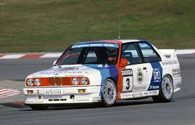
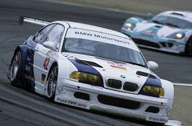
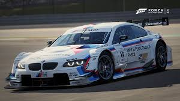

Historia en el DTM
BMW fue uno de los fundadores del DTM moderno. Cuando el campeonato comenzó en 1984, la marca bávara apostó por el BMW M3 E30, que redefinió lo que podía ser un turismo de competición. Ligero, ágil, con su motor de cuatro cilindros a todo gas, el M3 E30 dominó el DTM de finales de los años 80, siendo considerado el turismo de competición más exitoso de la historia.
Pilotos como Roberto Ravaglia y Johnny Cecotto escribieron páginas doradas con la hélice bávara. Sin embargo, a principios de los 90 la llegada de Mercedes con recursos ilimitados y el Audi V8 quattro forzaron a BMW a dar un paso atrás. En 2000, un intento de regreso con el M3 GTR terminó de forma polémica: el motor V8 no encajaba y BMW se retiró.
El gran regreso llegó en 2012, y fue épico. BMW volvió con el M3 E92 DTM y se proclamó campeón en su primer año de vuelta con Bruno Spengler. Marco Wittmann añadiría dos títulos más en 2014 y 2016, consolidando a BMW como potencia renovada.
Coches

BMW M3 E30
1987 - 1992El rey de los años dorados del DTM. Con un motor S14 de 4 cilindros de 2,3 litros y 16 válvulas rozando los 300 CV, el M3 E30 era una herramienta increíblemente precisa. Su bajo peso (~960 kg) y su equilibrio perfecto lo hacían imbatible en circuitos técnicos. Ganó los campeonatos de 1987 y 1989.

BMW M3 GTR
2001 - 2003El intento de regreso de BMW al DTM moderno fue con un M3 equipado con motor V8 de 4,0 litros. La elección generó polémica y las reglas acabaron por expulsar ese motor tan radical. Un episodio agridulce que desembocó en la retirada de BMW hasta 2012.

BMW M3 E92 DTM
2012 - 2018El regreso soñado. Desarrollado desde cero bajo el nuevo reglamento, con motor V8 de 4,0 litros y ~480 CV. Con él, Bruno Spengler se hizo campeón en 2012 y Marco Wittmann en 2014 y 2016. El coche más exitoso de la era moderna de BMW en el DTM.
Pilotos Destacados
Roberto Ravaglia
Campeón DTM 1989
El italiano de Bolonia ganó el DTM en 1989 con el M3 E30 y también triunfó en el Campeonato Europeo de Turismos. Veloz, inteligente y elegante al volante, fue el emblema de la primera era dorada de BMW.
Bruno Spengler
Campeón DTM 2012
El canadiense protagonizó el regreso triunfal de BMW. Con el M3 E92, conquistó el título en el primer año de vuelta de la marca —un resultado histórico—. Consistente y rápido, fue uno de los referentes del DTM moderno.
Marco Wittmann
Campeón DTM 2014 · 2016
El alemán de Fráncfort consolidó la supremacía de BMW con dos títulos. Su conducción técnica y precisa, con una gestión ejemplar de los neumáticos en carrera, lo convierten en uno de los más completos de la era moderna del DTM.
Johnny Cecotto
Piloto estelar 1987-1989
El venezolano, ex campeón mundial de motociclismo, fue una de las estrellas del DTM con el M3 E30. Rápido y espectacular, su estilo agresivo enamoró al público hasta que un grave accidente en Hockenheim en 1989 truncó su prometedora carrera.